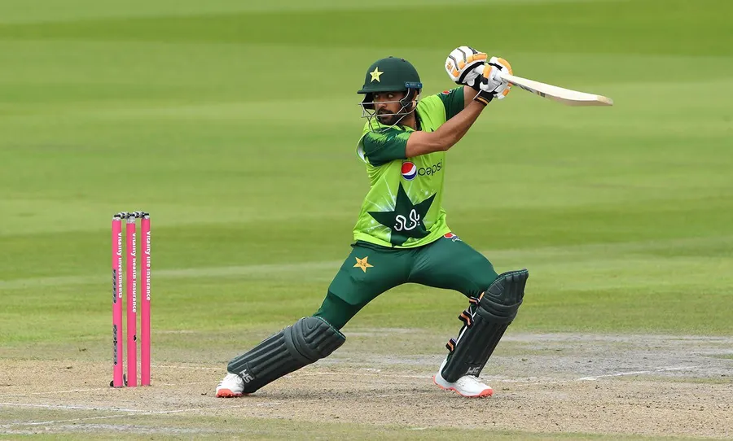
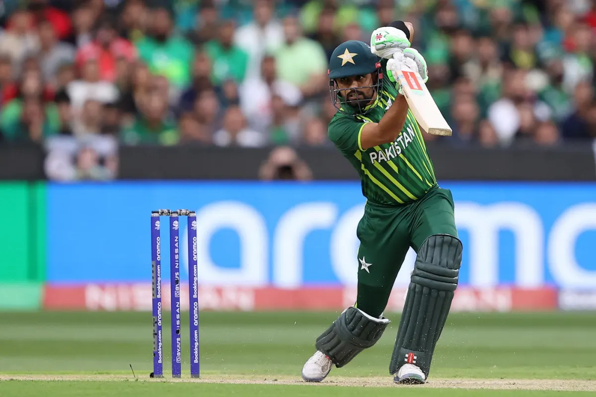

👑Babar Azam, often called the "King of Pakistan Cricket," is one of the most stylish and consistent batsmen in modern-day cricket. Born on 15 October 1994 in Lahore, Pakistan, Babar rose through the ranks with his sheer talent, dedication, and determination. Today, he is considered among the best batsmen across all formats of the game.
Records
👑Babar Azam has shattered multiple batting records. He is the fastest player to 1000, 2000, and 3000 ODI runs for Pakistan, surpassing even cricketing legends. He has maintained an outstanding batting average in ODIs and T20s, consistently ranking in the top ICC player rankings.

Batting Style
Known for his elegant cover drives and calm temperament, 👑Babar Azam’s batting is a perfect balance of aggression and technique. His ability to rotate the strike and accelerate when required makes him one of the most dangerous batsmen in the world.
Professional Career
👑Babar made his international debut in 2015 and quickly became a mainstay in Pakistan’s batting lineup. He has captained Pakistan in all three formats and led the team to several historic victories. Under his leadership, Pakistan achieved the No.1 spot in T20 rankings.
Achievements
👑Babar Azam has numerous awards to his name, including ICC Cricketer of the Year and several Player of the Series awards. His consistency in international cricket has made him a global cricketing icon, admired by fans worldwide.

Some Icoic Highlights
Enjoy the best highlight of 👑King Babar Azam.
From elegant shots to match-winning knocks, every moment is here. A true collection of videos showing why he is the King of cricket.
Legacy
With years still ahead in his career, Babar Azam continues to inspire millions of aspiring cricketers. He is not only a batsman of extraordinary class but also a role model for young athletes in Pakistan and beyond.